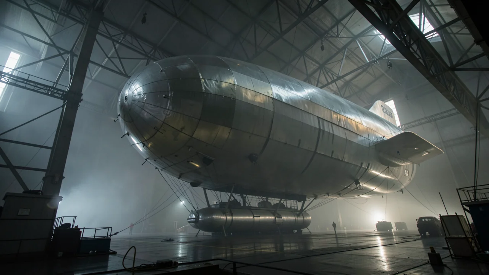
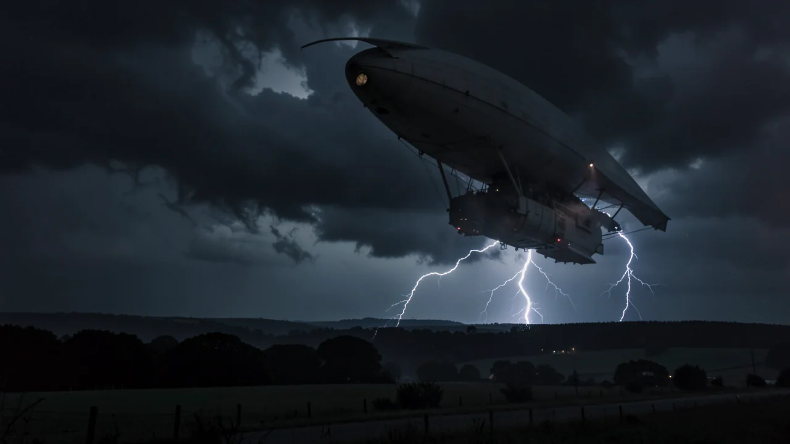

R101: 영국의 비극적인 비행선 사고
AI 생성 콘텐츠: 이 페이지의 텍스트, 이미지 및 기타 미디어는 인공지능으로 만들어졌으며 오류가 있을 수 있습니다.
2026-10-13 업데이트: 이 페이지의 사실 오류를 바로잡았습니다.
이웃을 염탐하는 데 드론을 사용하기 전, 영국은 거대한 크기의, 가연성이 높고 엄청나게 비싼 기구를 이용하여 하늘을 정복하려 했습니다.

- R101은 검증되지 않은 기술과 정치적 압력의 희생양이었습니다.
- 이 참사로 대규모 비행선 여행을 향한 영국의 야망은 사실상 끝났습니다.
- 공학적 실패는 안전보다 위신을 앞세울 때 자주 일어납니다.
1930년이라고 상상해 보세요. 당신은 카딩턴의 습한 비행장에 서서, 고층 건물만큼 큰 은색 거대한 비행선을 올려다보고 있습니다. 바로 R101입니다. 웅장하고 위엄이 넘치며, 영국 납세자들에게 막대한 비용을 안겼습니다. 이것은 단순한 비행선이 아니었습니다. 제국주의적 자부심을 상징하는 거대한 부유하는 기념물이자, 중력에 대한 거대한 도전이었으며, 그리고 역사가 나중에 상기시켜 줄 것처럼, 매우 크고 매우 비싼 방식으로 화재를 일으킬 수 있는 존재였습니다.

제국의 지나치게 부풀려진 자존심
당시 영국 정부는 바다를 지배하는 것만으로는 만족하지 않았고, 하늘을 지배하는 데 집착했습니다. 계획은 간단했습니다. 런던에서 인도까지 귀빈들을 품위 있게 실어 나를 거대하고 호화로운 비행선 함대를 만드는 것이었습니다. 기본적으로는 전망 좋은 1등석 객실이었죠. 언제든 구멍이 날 수 있다는 근원적인 위협만 신경 쓰지 않는다면 말입니다.
이 계획을 실현하기 위해 영국은 서로 다른 두 가지 엔지니어링 철학을 바탕으로 치열한 경쟁을 벌였습니다. 한쪽에는 국영 왕립비행선공장(Royal Airship Works)이 새롭고 거의 검증되지 않은 기술로 건조한 ‘공식’ 비행선 R101이 있었고, 다른 한쪽에는 민간 회사가 보다 전통적인 방법을 사용하여 건설한 R100이 있었습니다. 이는 마치 1930년대의 기술 스타트업과 거대하고 느리게 움직이는 기존 대기업 간의 경쟁과 같았지만, 실제로는 ‘스타트업’이 승리하고 있었습니다.
R101은 정부 지원을 받아 진행된 프로젝트였지만, 결국 제국주의적 야망의 실패를 상징하게 되었다.
'감'에 의존한 엔지니어링
정부 지원 혁신의 문제는 바로 이것입니다. 때로 '혁신'은 '아직 시험해 보지 않았다'를 그럴듯하게 표현한 말일 뿐입니다. R101에는 무거운 디젤 엔진 다섯 기와 거대한 가스 주머니를 붙잡아 두고 가스를 빼내는 새로운 방식 등 검증되지 않은 기술이 가득했고, 그 때문에 비행선 전체가 하늘에 떠 있는 수학 문제가 되어 버렸습니다.
엔지니어들은 시간에 쫓기면서 무게, 양력, 구조적 강도의 균형을 맞추려 애썼습니다. 사실상 그들은 금속 골조와 천, 가스로 하늘을 나는 고층 건물을 만들려 했던 셈입니다. 설명서 없이 이케아 가구를 조립해 본 적이 있다면, R101 격납고에서 벌어지던 다급하고 위험천만한 추측의 수준을 짐작할 수 있을 겁니다. 다만 이케아 선반을 잘못 조립하면 흔들리는 책장이 생길 뿐이지만, R101을 잘못 만들면 국가적 비극이 일어납니다.

꿈을 앗아간 추락 사고
1930년 10월, 폭풍우가 몰아치던 밤, R101호는 첫 해외 항해로 인도를 향해 출발했습니다. 비행선은 무거웠고, 강풍에 시달렸으며, 가스가 새고 있었습니다. 북프랑스 상공에서 보베 인근 능선 위로 고도를 잃고 숲 가장자리에 추락했습니다. 이어진 화재로 탑승자 54명 중 48명이 사망했고, 그중에는 비행선의 주요 관계자들도 포함되어 있었습니다.
이것은 단순한 기계 결함이 아니라 영국 비행선 계획 전체에 울린 조종이었습니다. 갑자기, 가스로 가득 찬 거대한 비행선이 전 세계를 누빈다는 구상은 '여행의 미래'라기보다 '아주 불붙기 쉬운 도박'처럼 보였습니다. 이 참사는 꿈은 아름다웠지만, 솔직히 말해 공학은 엉망이었다는 사실을 증명했습니다.
90년도 더 된 낡은 비행선에 왜 관심을 가져야 할까요?
R101은 ‘과장된 기술’의 위험성을 보여주는 대표적인 사례이기 때문입니다. 정치적 압력과 국가적 자존심이 ‘안전 마진’이나 ‘기본 물리학’과 같이 지루하고 필수적인 요소보다 우선시될 때 어떤 일이 벌어지는지를 보여줍니다. 오늘날과 같이 과장된 홍보로 이루어지는 기술 출시와 ‘빠르게 움직이고 문제점을 해결한다’는 방식이 유행하는 시대에, R101은 경종을 울리는 사례가 됩니다. 여기서 ‘문제점’은 종종 우리의 실제 삶과 연결되어 있습니다.
다음번에 혁신적인 신제품을 약속하며 열역학 법칙을 무시하는 것처럼 보이는 기술 회사의 창업자를 보게 된다면, R101을 떠올려 보세요. R101은 크고, 번쩍거렸지만, 처음부터 실패할 운명이었습니다.
그래서, 진정한 질문은 다음과 같습니다. 우리는 현재 더 많은 실리콘과 더 적은 비행선을 사용하여 R101과 같은 것을 만들고 있는 것일까요?